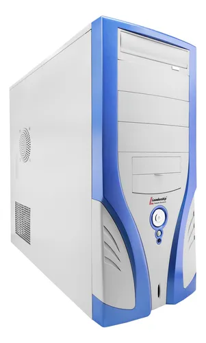
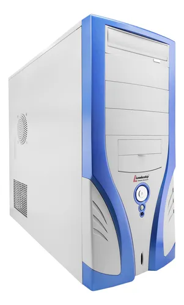

GPU
Graphics Processing Unit-Unidade de Processamento de Gráficos

A GPU (Graphics Processing Unit - Unidade de Processamento de Gráficos) é um componente especializado
em processamento paralelo de dados e, mais especificamente, processamento de vídeo.
De forma geral, existem dois tipos de placa de vídeo (GPU): A integrada e a dedicada.
A GPU integrada é um componente integrado á placa-mãe ou CPU, e costuma utilizar a memória RAM do
computador, além de ter um menor desempenho que processadores de vídeo dedicados. Costumam ser
encontradas em laptops
As GPUs dedicadas têm a própria memória de acesso rápido integrada e maior potência comparadas a
GPUs integradas.

 
